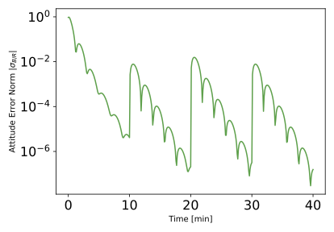
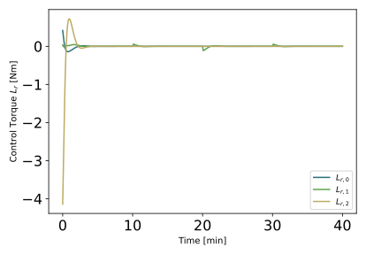
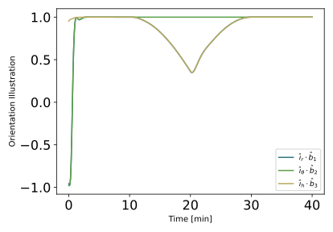
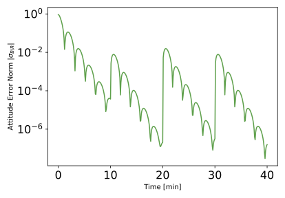
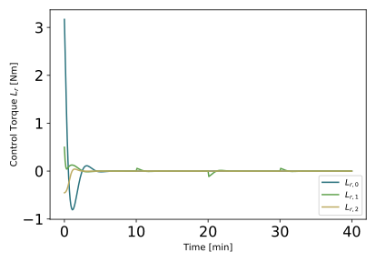
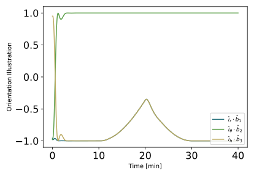

scenarioSweepingSpacecraft
Overview
This script discusses how to perform sweeping maneuvers on a spacecraft with respect to the Hill frame ( or an alternate, corrected Hill Frame). It sets up a 6-DOF spacecraft which is orbiting the Earth.
The script is found in the folder basilisk/examples and executed by using:
python3 scenarioSweepingSpacecraft.py
A single simulation process is created which contains both the spacecraft simulation modules, as well as the Flight Software (FSW) algorithm modules.
The simulation setup is similar to the one used in the Hill pointing guidance example scenarioAttitudeGuidance. The main difference is based on the use of the Module: eulerRotation to allow 3-2-1 Euler rotations of the Hill reference frame. This rotating Hill frame becomes the new reference frame for the attitude tracking error evaluation module. Two inputs are added : (1) A sequence of 3-2-1 Euler angle rate commands (in rad/s) of type numpy array, (2) A sequence of time commands (in min) of type numpy array, which specifies the duration of each angle rate command.
When the simulation completes, 4 plots are shown : (1) The attitude error norm history, (2) The rate tracking error history, (3) The control torque vector history, as well as (4) The projection of the body-frame B axes \(\hat b_1\), \(\hat b_2\) and \(\hat b_3\) onto the Hill frame axes \(\hat\imath_r\), \(\hat\imath_{\theta}\) and \(\hat\imath_h\). This latter plot illustrates how the spacecraft is rotating with respect to the Hill frame during the sweeping maneuvers.
Illustration of Simulation Results
show_plots = True, useAltBodyFrame = False, angle_rate_command = np.array([[0.0,0,0.0],[0.0,0.002,0.0],[0.0,-0.002,0.0],[0.0,0,0.0]]), time_command = np.array([10,10,10,10])
The default scenario shown has the useAltBodyFrame flag turned off. It means that we seek to perform 3-2-1 Euler rotations on the Hill frame, and not an alternate, corrected Hill frame.
The resulting attitude error norm and control torque histories are shown below. Note that the projection of the body frame axe \(\hat b_2\) onto the Hill frame axe \(\hat\imath_{\theta}\) converge to \(|1|\), indicating that the rotation occurs with respect to \(\hat\imath_{\theta}\).
  show_plots = True, useAltBodyFrame = True, angle_rate_command = np.array([[0.0,0,0.0],[0.0,0.002,0.0],[0.0,-0.002,0.0],[0.0,0,0.0]]), time_command = np.array([10,10,10,10])
Here the useAltBodyFrame flag is turned on. It means that we seek to not perform 3-2-1 Euler rotations on the Hill frame but rather on an alternate, corrected Hill frame. We define the corrected Hill frame orientation as a 180 deg rotation about
\(\hat\imath_{\theta}\). This flips the orientation of the first and third Hill frame axis. This is achieved
through:
attGuidanceEuler.angleSet = [0, np.pi, 0]
The resulting attitude error norm history, rate tracking error history and the projection of the body-frame B onto the Hill frame are shown below.
  - scenarioSweepingSpacecraft.plot_attitude_error(timeLineSet, dataSigmaBR)[source]
Plot the attitude result.
- scenarioSweepingSpacecraft.plot_control_torque(timeLineSet, dataLr)[source]
Plot the control torque response.
- scenarioSweepingSpacecraft.plot_orientation(timeLineSet, dataPos, dataVel, dataSigmaBN)[source]
Plot the spacecraft orientation.
- scenarioSweepingSpacecraft.plot_rate_error(timeLineSet, dataOmegaBR)[source]
Plot the body angular velocity tracking error.
- scenarioSweepingSpacecraft.run(show_plots, useAltBodyFrame, angle_rate_command, time_command)[source]
The scenarios can be run with the followings setups parameters:
- Parameters:
show_plots (bool) – Determines if the script should display plots
useAltBodyFrame (bool) – Specifies if the Hill reference frame should be corrected
angle_rate_command (numpy array) – Sequence of 3-2-1 Euler angle rate commands (in rad/s)
time_command (numpy array) – Sequence of time commands, which specifies the duration of each angle rate command (in min)